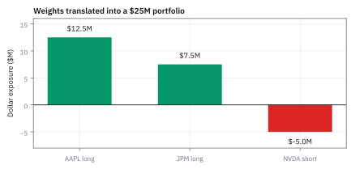

6.1 Row Vectors and Column Vectors
Vector คือรายการตัวเลขที่ทุกช่องมีชื่อ และการคูณแถวกับคอลัมน์คือการจับคู่ช่องชื่อเดียวกัน คูณ แล้วบวก ซึ่งให้ผลตอบแทนของพอร์ตในบรรทัดเดียว
พอร์ตมูลค่าสุทธิ (NAV) \$25 ล้าน ถือ AAPL 50% ของ NAV, JPM 30% และ short NVDA 20% ที่เหลือเป็นเงินสด วันนี้หุ้นทั้งสามขยับ +1.2%, −0.6% และ +0.4% ตามลำดับ (ตัวเลขสมมติ) หัวหน้าโต๊ะถามสองข้อ: พอร์ตได้หรือเสียกี่ดอลลาร์ และถ้าไฟล์ผลตอบแทนส่งมาเรียงเป็น NVDA, JPM, AAPL แต่ไม่มีใครเรียงใหม่ก่อนคำนวณ ตัวเลขในรายงานจะเพี้ยนไปเท่าไร
ลองตอบก่อนเปิดเฉลย
พอร์ตได้ \$85,000 หรือ +0.34% ของ NAV: AAPL ให้ +\$150,000, JPM ทำให้เสีย \$45,000 และ NVDA ที่ short ไว้ทำให้เสีย \$20,000 ส่วนไฟล์ที่เรียงผิด โปรแกรมยังคูณได้ตามปกติ แต่ตอบว่าขาดทุน \$55,000 ห่างจากความจริง \$140,000 เพราะการคูณ vector รู้แค่ตำแหน่ง ไม่รู้ชื่อหุ้น (คำตอบนี้ยังไม่รวมดอกเบี้ยเงินสด ปันผล และค่ายืมหุ้น)
ภาพรวมก่อนลงสูตร
ในหนังสือเล่มนี้ vector คือรายการตัวเลขที่เรียงตามลำดับ และแต่ละตำแหน่งมีความหมายตายตัว ตำแหน่งแรกคือ AAPL ตำแหน่งที่สองคือ JPM ตำแหน่งที่สามคือ NVDA พอร์ตหนึ่งพอร์ตจึงเป็น vector ของน้ำหนัก ผลตอบแทนหนึ่งวันเป็น vector ของผลตอบแทน ราคาวันนี้เป็น vector ของราคา และเงินที่พอร์ตจะได้ในแต่ละสถานการณ์ข้างหน้าก็เป็น vector อีกชุดหนึ่ง
คำถามแทบทุกข้อของพอร์ตมีรูปเดียวกัน: จับคู่ช่องที่ชื่อเดียวกัน คูณ แล้วบวก น้ำหนักคูณผลตอบแทนได้ผลตอบแทนพอร์ต จำนวนหุ้นคูณราคาได้มูลค่าพอร์ต การดำเนินการนี้เรียกว่า dot product และภาษา matrix เขียนมันเป็น “แถวคูณคอลัมน์” รูปด้านล่างแสดงผลคูณทีละคู่ที่สะสมกันจนเป็นผลตอบแทนพอร์ต 0.34%
หน้านี้จะตั้งชื่อช่องและหน่วย แยกแถวกับคอลัมน์ด้วย shape หาที่มาของสูตรผลตอบแทนพอร์ตจากนิยามของผลตอบแทน ดูว่าลำดับการคูณเปลี่ยนชนิดของคำตอบอย่างไร มองเงินที่พอร์ตได้ในหลายสถานการณ์เป็นการรวมคอลัมน์ของสินทรัพย์ แล้วจบที่การแปลงน้ำหนักเป็นจำนวนหุ้นและรายการซื้อขาย
รูป — ผลตอบแทนพอร์ตสะสมจากผลคูณทีละคู่
ศัพท์ที่ใช้ในหัวข้อนี้
- Vector และ component
- Vector คือรายการตัวเลขที่เรียงตามลำดับ component คือตัวเลขในช่องหนึ่ง ใช้เก็บข้อมูลของหลายสินทรัพย์ในงวดเดียวกัน โดยทุกช่องต้องตอบได้ว่าแทนอะไร วันไหน หน่วยอะไร
- Row vector และ column vector
- Row vector มีหนึ่งแถว column vector มีหนึ่งคอลัมน์ ตัวเลขเหมือนกันได้ แต่ shape ต่างกัน และ shape กำหนดว่าการคูณจะให้ตัวเลขเดียวหรือให้ตาราง
- Shape
- ขนาดเขียนเป็น “จำนวนแถว × จำนวนคอลัมน์” เช่น $3\times1$ ใช้ตรวจว่าคูณกันได้หรือไม่ และผลลัพธ์จะมีขนาดเท่าไร
- Transpose
- การพลิกแถวเป็นคอลัมน์ เขียน $\mathbf w^{\mathsf T}$ ช่องที่ $i,j$ ย้ายไปอยู่ช่อง $j,i$ ลำดับของสินทรัพย์ไม่เปลี่ยน ใช้เปลี่ยน column vector ให้เป็นแถวก่อนคูณ
- Dot product
- คูณช่องที่ตรงกันแล้วบวกทั้งหมด ได้ตัวเลขเดียว ใช้หาผลตอบแทนพอร์ต มูลค่าพอร์ต และต้นทุนของพอร์ต
- Outer product
- คอลัมน์คูณแถว ได้ตารางของผลคูณทุกคู่ข้ามช่อง ไม่ใช่ผลตอบแทนพอร์ต จะได้ใช้จริงตอนสร้าง covariance matrix ในบทถัดไป
- NAV, net และ gross exposure
- NAV คือมูลค่าสุทธิของพอร์ตรวมเงินสด net คือผลรวมมูลค่าสถานะแบบมีเครื่องหมาย gross คือผลรวมขนาดของทุกสถานะไม่สนเครื่องหมาย ใช้บอกว่าพอร์ตเอียงทางไหนและใหญ่แค่ไหน
สัญลักษณ์และหน่วย
| สัญลักษณ์ | ความหมาย | หน่วย |
|---|---|---|
| $N$ | NAV ตอนเริ่มงวด | ดอลลาร์ |
| $d_i$, $C$ | มูลค่าสถานะที่มีเครื่องหมายของสินทรัพย์ $i$ และเงินสด | ดอลลาร์ |
| $\mathbf w$, $w_c$ | น้ำหนักต่อ NAV ของหุ้น และของเงินสด | ไม่มีหน่วย |
| $\mathbf r$, $r_c$ | ผลตอบแทนของหุ้นแต่ละตัวในงวดเดียวกัน และของเงินสด | เศษส่วน (0.012 คือ 1.2%) |
| $\mathbf n$, $\mathbf p$ | จำนวนหุ้นที่มีเครื่องหมาย และราคาต่อหุ้น | หุ้น, ดอลลาร์ต่อหุ้น |
| $S$, $\boldsymbol\theta$ | ตาราง payoff (แถวคือสถานการณ์ คอลัมน์คือสินทรัพย์) และจำนวนที่ถือของแต่ละสินทรัพย์ | ดอลลาร์ต่อหน่วย, หน่วย |
ขั้นที่ 1 — ตั้งชื่อช่องและหน่วยก่อนใส่ตัวเลข
ก่อนคูณอะไร ต้องตกลงให้ได้ก่อนว่าช่องไหนคือหุ้นตัวไหน ใช้ข้อมูลวันไหน และวัดเป็นหน่วยอะไร มิฉะนั้นเราจะคูณตัวเลขที่ไม่ได้เป็นคู่กันโดยไม่รู้ตัว
| ช่อง | สินทรัพย์ | มูลค่าสถานะ (ล้านดอลลาร์) | น้ำหนัก $w_i$ | ผลตอบแทนวันนี้ $r_i$ |
|---|---|---|---|---|
| 1 | AAPL | 12.5 | 0.50 | 0.012 |
| 2 | JPM | 7.5 | 0.30 | −0.006 |
| 3 | NVDA (short) | −5 | −0.20 | 0.004 |
| — | เงินสด | 10 | 0.40 | 0 |
น้ำหนักคือมูลค่าสถานะหารด้วย NAV ทั้งพอร์ต ไม่ใช่หารด้วยมูลค่าของส่วนหุ้น เครื่องหมายลบหมายถึง short: ยืมหุ้นมาขายไว้ ถ้าราคาขึ้นเราต้องซื้อคืนแพงขึ้นจึงเสียเงิน เงินสดเป็นช่องที่ทำให้น้ำหนักทุกช่องรวมกันได้หนึ่งพอดี เพราะทุกดอลลาร์ของ NAV ต้องอยู่ที่ใดที่หนึ่ง บรรทัดสุดท้ายวางน้ำหนักกับผลตอบแทนเป็นคอลัมน์ในลำดับ AAPL, JPM, NVDA เดียวกัน และแปลงเปอร์เซ็นต์เป็นเศษส่วนแล้ว (1.2% เป็น 0.012) ก่อนจะคูณอะไรทั้งสิ้น
เงินสดบางส่วนในพอร์ตที่มี short มักต้องวางเป็นหลักประกันกับนายหน้า จึงใช้ได้ไม่อิสระทั้งก้อน แต่ในการนับ NAV มันยังเป็นของพอร์ต
ขั้นที่ 2 — แถว คอลัมน์ และ transpose
ตัวเลขชุดเดียวกันวางได้สองแบบ: ตั้งเป็นคอลัมน์หรือนอนเป็นแถว ความต่างนี้ดูเล็กน้อย แต่ขั้นถัดไปจะเห็นว่ามันกำหนดว่าการคูณจะได้ตัวเลขเดียวหรือได้ตารางทั้งตาราง
$\mathbf w$ มี shape $3\times1$ ส่วน $\mathbf w^{\mathsf T}$ มี shape $1\times3$ ตัวเลขเรียงเหมือนเดิมทุกตัว transpose แค่สลับเลขแถวกับเลขคอลัมน์ของทุกช่อง: ช่องแถว $j$ คอลัมน์ $i$ ย้ายไปอยู่แถว $i$ คอลัมน์ $j$ ตัวอย่าง matrix $A$ ขนาด $2\times3$ จึงกลายเป็น $3\times2$ แถวแรก $(2,3,7)$ กลายเป็นคอลัมน์แรก
ทำ transpose สองครั้งได้ของเดิม เพราะสลับดัชนีสองรอบก็กลับที่เดิม $((A^{\mathsf T})^{\mathsf T})_{ij}=(A^{\mathsf T})_{ji}=A_{ij}$ หนังสือเล่มนี้เก็บ vector เป็นคอลัมน์เสมอ และใช้ $^{\mathsf T}$ เมื่ออยากได้แถว ซอฟต์แวร์บางตัวใช้แถวเป็นค่าตั้งต้น ไม่ผิด แต่ต้องรู้ว่าใช้แบบไหนก่อนต่อสูตร
รูป — transpose พลิกทิศ แต่ลำดับช่องอยู่ที่เดิม
ขั้นที่ 3 — สูตรผลตอบแทนพอร์ตมาจากไหน
เราอยากได้ผลตอบแทนพอร์ตเป็น “น้ำหนักคูณผลตอบแทนแล้วบวก” แต่ต้องพิสูจน์จากนิยามของผลตอบแทนก่อน คือ (มูลค่าปลายงวด − มูลค่าต้นงวด) หารด้วยมูลค่าต้นงวด ให้สถานะหุ้นแต่ละตัวโตเป็น $d_i(1+r_i)$ และเงินสดโตเป็น $C(1+r_c)$
ท่าสำคัญอยู่บรรทัดที่สาม เมื่อลบ $N$ ออกจาก $V_1$ ส่วน “1” ใน $(1+r_i)$ ของทุกช่องรวมกันได้ $\sum_i d_i+C=N$ พอดี จึงหักกันหมด เหลือแต่ส่วนที่โตขึ้น $d_ir_i$ แล้วหารด้วย $N$ ทีละพจน์ได้น้ำหนักคูณผลตอบแทน ไม่ต้องสมมติอะไรเพิ่ม และใช้ได้กับสถานะ short ด้วย เพราะ $d_i$ ติดลบได้ ผลรวม $\sum_iw_ir_i$ คือนิยามของแถวคูณคอลัมน์ $\mathbf w^{\mathsf T}\mathbf r$
นี่คือคำตอบของโจทย์ต้นหน้า: กำไร \$85,000 แยกเป็นสามก้อนตามรูปน้ำตกด้านบน: \$150,000, −\$45,000 และ −\$20,000 เครื่องหมายลบของ short อยู่ในน้ำหนักแล้ว จึงไม่ต้องกลับเครื่องหมายผลตอบแทนของ NVDA อีกรอบ และ 0.34% เป็นผลตอบแทนของ NAV ทั้งก้อน ไม่ใช่ค่าเฉลี่ยของผลตอบแทนสามหุ้น ซึ่งเท่ากับ $(1.2-0.6+0.4)/3\approx0.33\%$ บังเอิญใกล้กันแต่คนละความหมาย
ขั้นที่ 4 — มิติด้านในต้องเท่ากัน และลำดับการคูณเปลี่ยนชนิดคำตอบ
แถวคูณคอลัมน์เป็นกรณีเล็กที่สุดของการคูณ matrix กฎทั่วไปคือ ช่องแถว $i$ คอลัมน์ $j$ ของผลคูณ เท่ากับแถว $i$ ของตัวหน้า dot กับคอลัมน์ $j$ ของตัวหลัง จึงคูณได้เฉพาะเมื่อแถวของตัวหน้ายาวเท่าคอลัมน์ของตัวหลัง
เลขตัวในสองตัว (ตัว $d$) ต้องเท่ากัน เพราะต้องมีคู่ให้จับครบทุกช่อง ส่วนเลขตัวนอกสองตัวบอก shape ของคำตอบ แถวคูณคอลัมน์จึงได้ตัวเลขเดียว แต่ถ้าสลับเป็นคอลัมน์คูณแถว มิติด้านในคือ 1 กับ 1 ซึ่งเท่ากัน คูณได้ แต่ได้ตาราง $3\times3$ ของผลคูณทุกคู่ข้ามหุ้น เรียกว่า outer product
ช่องแถว $i$ คอลัมน์ $j$ ของ outer product คือ $r_iw_j$ เช่นช่องบนสุดกลาง $0.012\times0.30=0.0036$ เป็นผลตอบแทน AAPL คูณน้ำหนัก JPM ซึ่งไม่มีความหมายทางบัญชี มีแต่แนวทแยง $0.0060,-0.0018,-0.0008$ ที่เป็นส่วนร่วมของจริง และผลรวมแนวทแยงคือ 0.0034 เท่ากับ dot product พอดี การคูณที่ shape ถูกจึงยังอาจตอบคนละคำถาม
ตัวอย่างที่สองคือ matrix $2\times3$ คูณคอลัมน์ $3\times1$ ได้ $2\times1$: แต่ละแถว dot กับคอลัมน์แยกกัน ถ้าให้แถวของ matrix เป็นผลตอบแทนหนึ่งวันของหุ้นสามตัว เช่น $R$ ที่แถวแรกคือ $(0.012,-0.006,0.004)$ และแถวที่สองคือ $(-0.010,0.005,-0.020)$ แล้วคูณ $\mathbf w$ จะได้ผลตอบแทนพอร์ตสองวันพร้อมกัน: วันแรก 0.0034 วันที่สอง $0.50(-0.010)+0.30(0.005)-0.20(-0.020)=0.0005$ โดยสมมติว่าปรับพอร์ตกลับน้ำหนักเดิมทุกเช้า ถ้าถือจำนวนหุ้นคงที่ น้ำหนักจะลอยไปตามราคา และใช้ $\mathbf w$ ชุดเดิมไม่ได้
รูป — shape ของผลคูณสามแบบ
ขั้นที่ 5 — มองตามคอลัมน์: เงินที่พอร์ตได้ในแต่ละสถานการณ์
matrix คูณคอลัมน์อ่านได้สองแบบ แบบแถวคือ dot product ทีละแถว อย่างที่เพิ่งทำ แบบคอลัมน์คือหยิบคอลัมน์ของแต่ละสินทรัพย์มาคูณจำนวนที่ถือแล้วบวก แบบหลังเป็นมุมมองหลักของการ hedge และของหน้าถัดไป ตัวอย่างนี้มีสองสถานการณ์ปีหน้า: ราคาขึ้นหรือราคาลง หุ้นวันนี้ราคา \$100 จะมีค่า \$120 หรือ \$80 ส่วน bond วันนี้ราคา \$100 จ่าย \$105 ทั้งสองกรณี เราถือหุ้น 10 หน่วยและ bond 5 หน่วย
แถวของ $S$ คือสถานการณ์ คอลัมน์คือสินทรัพย์ ต้นทุนวันนี้คือราคาคูณจำนวนแล้วบวก ได้ \$1,500 อ่านแบบแถว: ถ้าราคาขึ้น พอร์ตจ่าย $120(10)+105(5)=1{,}725$ ดอลลาร์ ถ้าราคาลงจ่าย 1,325 อ่านแบบคอลัมน์ (บรรทัดสุดท้าย): payoff ของพอร์ตคือ 10 ชุดของคอลัมน์หุ้นบวก 5 ชุดของคอลัมน์ bond ทั้งสองแบบให้ตัวเลขเดียวกันเพราะเป็นผลบวกชุดเดียวกันที่จัดกลุ่มต่างกัน
มุมมองคอลัมน์ทำให้ payoff กลายเป็นจุดในระนาบที่แกนหนึ่งคือ “เงินที่ได้ถ้าราคาขึ้น” อีกแกนคือ “เงินที่ได้ถ้าราคาลง” ดังรูปถัดไป คำถามว่าพอร์ตแบบไหนสร้างได้บ้างจากหุ้นกับ bond จึงกลายเป็นคำถามว่าลูกศรสองเส้นนี้ผสมกันไปถึงจุดไหนได้บ้าง
รูป — payoff ของพอร์ตคือลูกศรหุ้นต่อด้วยลูกศร bond
ขั้นที่ 6 — จากน้ำหนักเป็นดอลลาร์: net, gross และ NAV
รายงานความเสี่ยงไม่ได้ถามแค่ผลตอบแทน แต่ถามด้วยว่าพอร์ตเอียงไปทางไหนและใหญ่แค่ไหน คำตอบได้จาก vector มูลค่าสถานะ $\mathbf d=N\mathbf w$ (หน่วยล้านดอลลาร์)
net บวกตามเครื่องหมาย จึงบอกว่าพอร์ตเอียงขึ้นสุทธิเท่าไร: \$15 ล้าน หรือ 60% ของ NAV ส่วน gross บวกขนาดโดยทิ้งเครื่องหมาย จึงบอกว่าพอร์ตถือสถานะรวมใหญ่แค่ไหน: \$25 ล้าน หรือ 100% ของ NAV ตัวเลขนี้เท่ากับ NAV เพราะบังเอิญ ไม่ใช่กฎ ถ้า short เพิ่ม gross จะเกิน NAV ได้ gross คือสิ่งที่หน้า norms เรียกว่า L1 norm ของ $\mathbf d$
ถ้าหุ้นทั้งสามขยับขึ้นพร้อมกัน 1% พอร์ตได้ $0.60\times1\%=0.60\%$ ของ NAV แต่ตลาดจริงไม่บังคับให้ทุกหุ้นขยับเท่ากัน พอร์ตที่ net เป็นศูนย์จึงยังขาดทุนได้ถ้าหุ้นฝั่ง long ลงขณะที่ฝั่ง short ขึ้น
รูป — มูลค่าสถานะเป็นดอลลาร์

ขั้นที่ 7 — แปลงน้ำหนักเป็นจำนวนหุ้น แล้ว rebalance ด้วยการลบ vector
น้ำหนักเป็นแค่สัดส่วน สิ่งที่ส่งให้โบรกเกอร์คือจำนวนหุ้น ขั้นนี้ใช้พอร์ตสมมติอีกชุด NAV \$10 ล้าน หุ้นสี่ตัว A–D
โจทย์ให้อะไรมาบ้าง: ราคา $\mathbf p=(142,68,205,33)$ ดอลลาร์ต่อหุ้น น้ำหนักเป้าหมาย 35%, 25%, 30%, 10% ซื้อได้เฉพาะหุ้นเต็มตัว จึงปัดเป็นจำนวนเต็มที่ใกล้ที่สุด
| หุ้น | ราคา (ดอลลาร์) | เป้าหมาย | จำนวนที่ปัด | มูลค่า (ดอลลาร์) |
|---|---|---|---|---|
| A | 142 | 35% | 24,648 | 3,500,016 |
| B | 68 | 25% | 36,765 | 2,500,020 |
| C | 205 | 30% | 14,634 | 2,999,970 |
| D | 33 | 10% | 30,303 | 999,999 |
คำตอบ: มูลค่าหุ้นรวม $\mathbf n^{\mathsf T}\mathbf p$ คือ \$10,000,005 เกินงบ \$5 การปัดไม่ได้สร้างเงิน 5 ดอลลาร์ แต่ทำให้เงินสดติดลบ 5 ดอลลาร์ NAV ยังเป็น \$10 ล้าน ถ้าห้ามเงินสดติดลบ ให้ลด D ลงหนึ่งหุ้น จะเหลือเงินสด \$28
ต่อมาเปลี่ยนเป้าหมายเป็น 25% ทุกตัว (ราคาเดิม) ปัดแบบเดิมได้จำนวนใหม่ รายการที่ต้องส่งคำสั่งคือผลลบช่องต่อช่อง และมูลค่าของแต่ละคำสั่งคือจำนวนคูณราคาทีละช่อง
คำตอบ: ขาย A 7,042 หุ้น (\$999,964) ขาย C 2,439 หุ้น (\$499,995) ซื้อ D 45,455 หุ้น (\$1,500,015) เงินออกสุทธิแค่ \$56 แต่ยอดซื้อขายรวมเกือบ \$3 ล้าน ถ้าต้นทุนซื้อขาย 10 basis points ของยอดรวม จะเสียราว \$3,000 ไม่ใช่ 10 basis points ของ \$56 เงินสดเดิม −5 ดอลลาร์กลายเป็น −61 ดอลลาร์ก่อนค่าธรรมเนียม
ตรวจเองใน 10 วินาที: $45{,}455\times33=1{,}500{,}015$ และ $1{,}500{,}015-999{,}964-499{,}995=56$
รูป — รายการซื้อขายจากการลบ vector
ความผิดที่ทำให้ตัวเลขผิดโดยไม่มี error
ลำดับช่องไม่ตรงกัน: ใช้ผลตอบแทนเรียง NVDA, JPM, AAPL กับน้ำหนักเรียง AAPL, JPM, NVDA ได้ $0.50(0.004)+0.30(-0.006)-0.20(0.012)=-0.0022$ หรือขาดทุน \$55,000 แทนกำไร \$85,000 shape ถูกทุกอย่าง โปรแกรมจึงไม่เตือน วิธีป้องกันคือจับคู่ด้วยรหัสหุ้นและวันที่ก่อนแปลงเป็น vector
ลืมแปลงเปอร์เซ็นต์: ใช้ $(1.2,-0.6,0.4)$ แทน $(0.012,-0.006,0.004)$ ได้ $\mathbf w^{\mathsf T}\mathbf r=0.34$ ถ้าอ่านเป็นเศษส่วนจะกลายเป็นกำไร \$8.5 ล้าน ใหญ่เกินจริง 100 เท่า
กลับเครื่องหมาย short ซ้ำ: น้ำหนัก NVDA ติดลบอยู่แล้ว ถ้ากลับเครื่องหมายผลตอบแทนอีกรอบ จะได้ส่วนร่วม $(-0.20)(-0.004)=+0.0008$ รวมเป็น 0.50% หรือ \$125,000 สูงเกินจริง \$40,000
หารด้วยมูลค่าส่วนหุ้นแล้วคูณด้วย NAV: ถ้าหารด้วย \$15 ล้าน (net ของหุ้น) จะได้น้ำหนัก $(0.833,0.5,-0.333)$ และผลตอบแทน 0.567% ซึ่งเป็นผลตอบแทนต่อเงินในหุ้น คูณ \$15 ล้านได้ \$85,000 ถูก แต่ถ้าเผลอคูณ \$25 ล้านจะได้ \$141,667 ต้องใช้ตัวหารกับตัวคูณชุดเดียวกัน
ผสมเวลา: ใช้น้ำหนักปลายวันกับผลตอบแทนของวันเดียวกัน หมายความว่านับกำไรจากหุ้นที่เพิ่งซื้อตอนปิดตลาด ซึ่งไม่ได้ถือระหว่างวัน น้ำหนักต้องเป็นของต้นงวดที่ผลตอบแทนเริ่มนับ
ใช้ทำอะไรบนโต๊ะจริง
ระบบ P&L ของโต๊ะเก็บพอร์ตเป็นตารางที่มีรหัสหุ้นกำกับทุกแถว แล้วค่อยแปลงเป็น vector ตอนคำนวณ รูปน้ำตกแบบต้นหน้าเรียกว่า P&L attribution คือการแยกกำไรขาดทุนว่ามาจากสถานะไหน ผู้จัดการพอร์ตดูมันทุกเย็น ส่วนตาราง payoff $S$ ที่แถวคือสถานการณ์และคอลัมน์คือสินทรัพย์ เป็นจุดเริ่มของการตั้งปัญหา hedge แบบ linear program คือหาจำนวน $\boldsymbol\theta$ ที่ต้นทุน $\mathbf p^{\mathsf T}\boldsymbol\theta$ ต่ำสุดโดยที่ $S\boldsymbol\theta$ ยังจ่ายพอสำหรับภาระทุกสถานการณ์
โจทย์ตรวจความเข้าใจ
1. คงน้ำหนักสามหุ้นเดิม แต่ NVDA ลดลง 0.4% แทนที่จะขึ้น 0.4% หุ้นอื่นเหมือนเดิม พอร์ตได้เท่าไร
เฉลย
ส่วนร่วมของ NVDA เป็น $(-0.20)(-0.004)=+0.0008$ รวม $0.0060-0.0018+0.0008=0.0050$ หรือ 0.50% คูณ \$25 ล้านได้ \$125,000 ดีกว่าเดิม \$40,000 เพราะหุ้นที่ short ไว้ราคาลง
2. เพิ่มน้ำหนักหุ้นทั้งสามเป็นสองเท่า $(1.00,0.60,-0.40)$ โดย NAV ยัง \$25 ล้าน ผลตอบแทน net, gross และเงินสดเป็นเท่าไร
เฉลย
$\mathbf w^{\mathsf T}\mathbf r$ เป็นสองเท่าคือ 0.68% หรือ \$170,000 มูลค่าสถานะเป็น $(25,15,-10)$ ล้าน net $=30$ ล้าน gross $=50$ ล้าน เงินสด $=25-30=-5$ ล้าน คือต้องกู้ \$5 ล้าน การคูณ vector ด้วย 2 ทำให้ทุกอย่างที่เป็นเชิงเส้นเป็นสองเท่า แต่ต้นทุนกู้และค่ายืมหุ้นจริงไม่ได้อยู่ในการคำนวณนี้
3. ในตลาดสองสถานการณ์เดิม (หุ้นจ่าย 120 หรือ 80 bond จ่าย 105 ราคาวันนี้ \$100 ทั้งคู่) ถ้า short หุ้น 5 หน่วยและซื้อ bond 10 หน่วย ต้นทุนวันนี้และเงินที่ได้ในแต่ละสถานการณ์เป็นเท่าไร
เฉลย
$\boldsymbol\theta=(-5,10)$ ต้นทุน $100(-5)+100(10)=500$ ดอลลาร์ ถ้าราคาขึ้นได้ $120(-5)+105(10)=450$ ถ้าราคาลงได้ $80(-5)+105(10)=650$ พอร์ตนี้ได้มากกว่าเมื่อหุ้นลง ในรูประนาบ payoff ลูกศรของมันชี้เหนือเส้น 45 องศา
คำนวณซ้ำด้วย JavaScript
Array ใน JavaScript ไม่รู้ว่าตัวเองเป็นแถวหรือคอลัมน์ โค้ดจึงเขียน dot product ตรง ๆ ตรวจความยาว และจัดผลตอบแทนตามชื่อหุ้นก่อนคูณ ตัวเลขทุกตัวในหน้านี้ออกมาจากสคริปต์นี้
เปิดดูโค้ด
function dot(a, b) {
if (a.length !== b.length) throw new RangeError('Mismatched lengths');
return a.reduce((s, x, i) => s + x * b[i], 0);
}
const names = ['AAPL', 'JPM', 'NVDA'];
const w = [0.50, 0.30, -0.20];
const byName = {NVDA: 0.004, AAPL: 0.012, JPM: -0.006};
const r = names.map(n => byName[n]); // align by name first
const nav = 25e6;
const contrib = w.map((x, i) => x * r[i]); // 0.006, -0.0018, -0.0008
const Rp = dot(w, r); // 0.0034
const wrong = dot(w, [0.004, -0.006, 0.012]); // -0.0022
const outer = r.map(ri => w.map(wj => ri * wj));
const days = [r, [-0.010, 0.005, -0.020]].map(row => dot(row, w));
const S = [[120, 105], [80, 105]], theta = [10, 5];
const payoff = S.map(row => dot(row, theta)); // 1725, 1325
const cost = dot([100, 100], theta); // 1500
const d = w.map(x => nav * x);
const net = d.reduce((s, x) => s + x, 0), gross = d.reduce((s, x) => s + Math.abs(x), 0);
const p = [142, 68, 205, 33], target = [0.35, 0.25, 0.30, 0.10], cap = 1e7;
const n = target.map((t, i) => Math.round(cap * t / p[i]));
const nNew = p.map(pi => Math.round(cap / 4 / pi));
const dn = nNew.map((x, i) => x - n[i]);
console.log({contrib, Rp, pnl: nav * Rp, wrongPnl: nav * wrong, outer, days,
payoff, cost, d, net, gross, cash: nav - net,
n, stockValue: dot(n, p), nNew, dn, netTrade: dot(dn, p),
grossTrade: dot(dn.map(Math.abs), p)});สิ่งที่ควรตอบได้หลังอ่าน
- ทุกช่องของ vector ต้องบอกได้ว่าเป็นสินทรัพย์ไหน วันไหน หน่วยอะไร shape ที่ถูกต้องไม่ได้พิสูจน์ว่าข้อมูลเข้าคู่กัน
- ผลตอบแทนพอร์ต $\mathbf w^{\mathsf T}\mathbf r+w_cr_c$ มาจากนิยามของผลตอบแทนโดยตรง เพราะส่วน “1” ของทุกสถานะรวมกันเท่ากับ NAV แล้วหักกันหมด
- $(m\times d)(d\times p)$ ได้ $m\times p$: แถวคูณคอลัมน์ได้ตัวเลขเดียว คอลัมน์คูณแถวได้ตาราง และ matrix คูณ vector ได้หนึ่งคำตอบต่อหนึ่งแถว
- $S\boldsymbol\theta$ อ่านได้สองแบบ: ทีละสถานการณ์ (แถว) หรือเป็นผลรวมคอลัมน์ของสินทรัพย์ที่คูณจำนวนที่ถือ (คอลัมน์)
- net กับ gross ของสถานะหรือของรายการซื้อขายเป็นคนละตัวเลข ค่าธรรมเนียมคิดจาก gross
หน้าถัดไป linear combinations และ linear independence ใช้มุมมองคอลัมน์เต็มตัว: ถามว่าคอลัมน์ของสินทรัพย์ที่มีอยู่ผสมกันไปถึง payoff หรือพอร์ตแบบไหนได้บ้าง และกองทุนชื่อใหม่เพิ่มทางเลือกจริงหรือแค่ซ้ำของเดิม